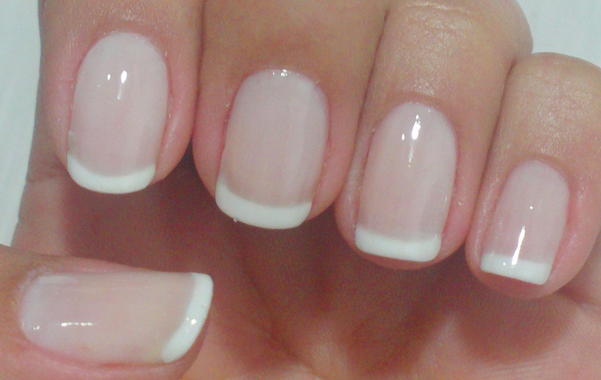

Alessandro Feitoza
- Filho duma mãe e de um pai de classe média
- Era um dos melhores alunos da sala
- Meus pais me matricularam num curso informática
- Passei no ENEM / Fui pra faculdade
- Me formei / Arrumei um Estágio
- Comecei a fazer programas
- Comecei a ensinar programação
- E agora tô aqui
E nada disso era verdade
Pai Catador de caranguejo / Alcoolatra
Mãe analfabeta / Dona de casa
5 irmãs
Aos 08 anos comecei a ajudar meu pai
Um pé pisando no tempo e o outro no espaço
Mas fora do palco
R$ 40 / semana
06:00 às 12:00
| Francesinha dos outros  | As minhas |
E os compiuter?
Curso de Operador de Computador
Curso de Suporte e Manutenção
Não passei nos requisitos
Pronto, terminei os 2 cursos
Consertar o computador de quem?

Adianta insistir?
Surge outra oportunidade
Curso de Informática gratuito
1 ano de duração (880h)
Estágio Remunerado
Não passei nos requisitos
SÓ DARÁ ERRADO SE VOCÊ TENTAR
Estágio #1
Não tem idade
Tinha que ter 16
Não daria tempo
Voltar pras bicicletas?
volto pros caranguejos
Estágio #2
- Jovem Aprendiz
- Carteira Assinada*
- Contrato de 02 anos

FAIL
Tentativa #3
+200 inscritos
- Passaram 36 para informática
- 32 passaram no psico-técnico*
- tinha um tal de Edital 28 conseguiram a vaga
Fiquei em 3º lugar
2011 (17 anos)
- 2012: Arrumei uma vaga de PHP
- 2012: Comecei a dar aulas de PHP na UTD
- Terminei o ensino médio
- Não consegui SISU
- Quase não consigo Prouni
- 2014: Fundei a PHP com Rapadura
- 2014-17: Rodei o Ceará todo falando sobre SL e PHP
- Já trabalhei (trabalho) pra SEDUC, SECITECE, SECULT
- Já fiz programa pra dentro e fora do Brasil
E o resto é historia,
a cortina ainda não se fechou

Encontre o seu palco
Suba nele, e dê o seu show
Alessandro Feitoza
Professor de Códigos e outras computarias
& Dev